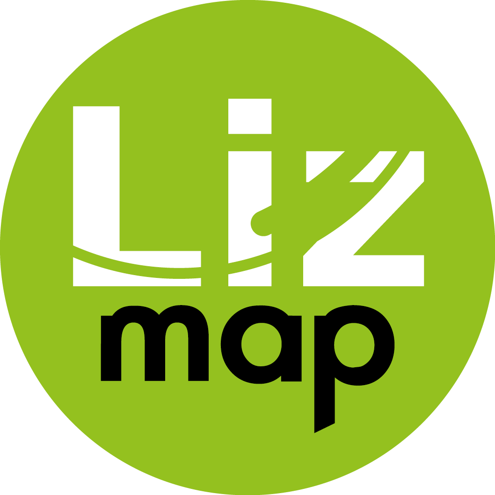

Le Portail
Choix des outils


Ces outils sont adossés à une base de données PostGreSQL et au module spatial PostGIS, Open source également.


Ce site web est hébergé chez 3Liz qui est l'éditeur de l'application LizMap. La maintenance (patchs correctifs et montées de versions) et la continuité de service sont ainsi assurées par ce prestataire.
Principe de fonctionnement
L’architecture du SIG de l’Agglo peut être schématisée comme sur la figure ci-dessous :

L'interface graphique
Par défaut, vous accédez à l'interface suivante où vous retrouvez :
- zone verte : barre de recherche par mots clés d'une carte, également appelée projet.
- zone bleue : message d'accueil
- zone rouge : liste des projets
- zone jaune : bouton de connexion pour accéder à d'autres projets à diffusion restreinte. Il faut pour cela disposer d'un compte utilisateur.

Connexion
Pour se connecter, il faut :
- saisir le nom d'utilisateur qui vous a été attribué
- saisir le mot de passe que vous avez choisi lors de l'activation de votre compte.
- valider en cliquant sur le bouton "Vous connecter"

Dès lors, la liste des projets se met à jour avec les cartes auxquelles vous avez un accès privilégié.
 L'administrateur ne peut pas connaître votre mot de passe. En cas d'oubli, vous avez la possibilité de le réinitialiser vous-même depuis le lien "J'ai oublié mon mot de passe" présent sur la page de connexion ou de demander à l'administrateur de vous renvoyer un lien d'activation de votre compte.
L'administrateur ne peut pas connaître votre mot de passe. En cas d'oubli, vous avez la possibilité de le réinitialiser vous-même depuis le lien "J'ai oublié mon mot de passe" présent sur la page de connexion ou de demander à l'administrateur de vous renvoyer un lien d'activation de votre compte.